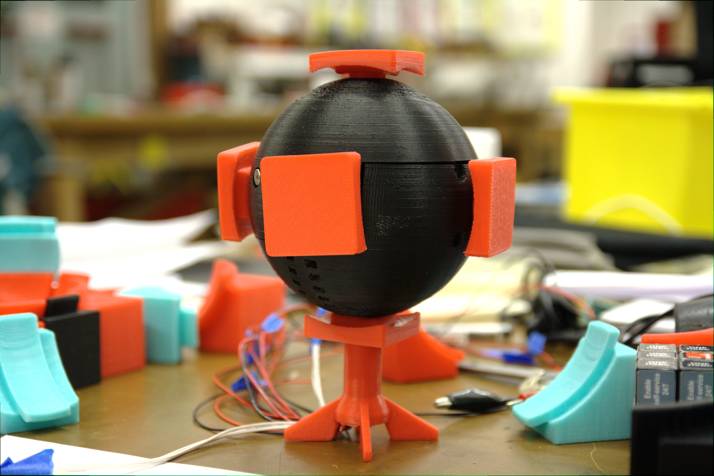
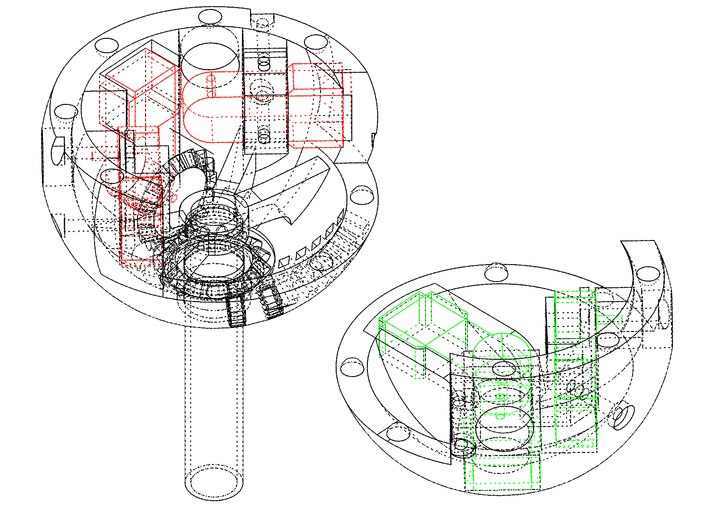
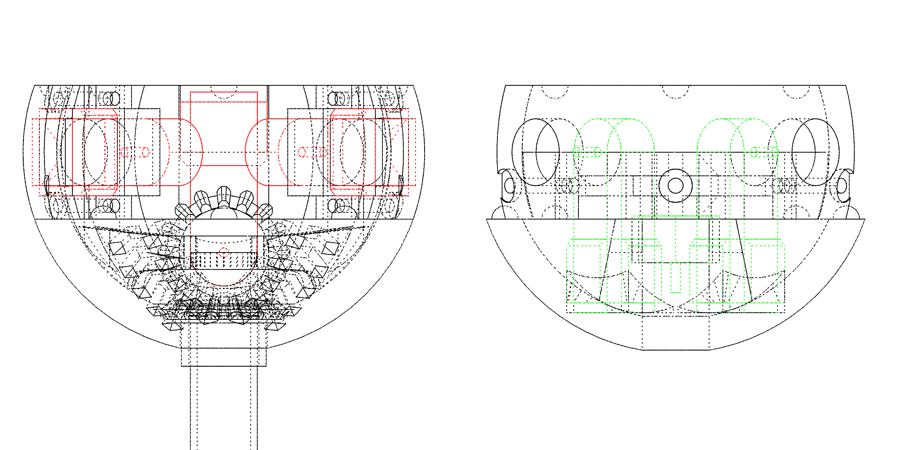
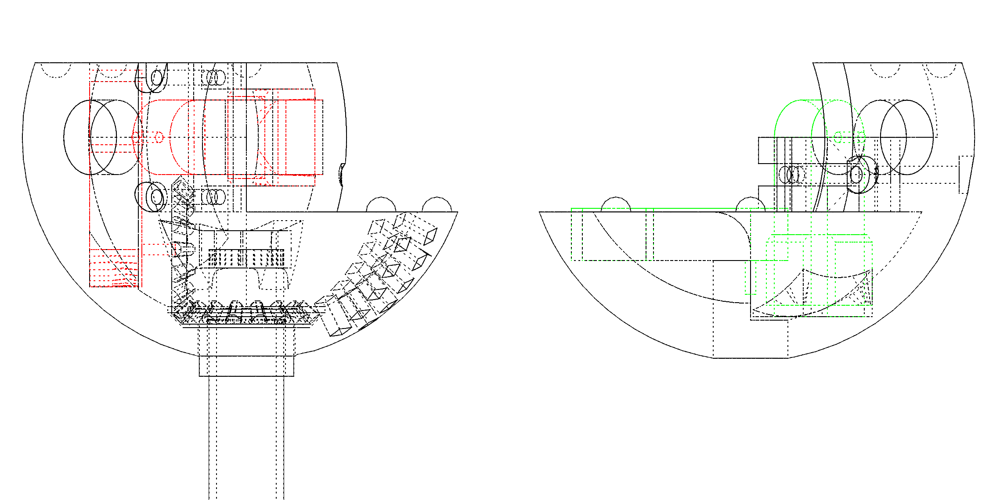
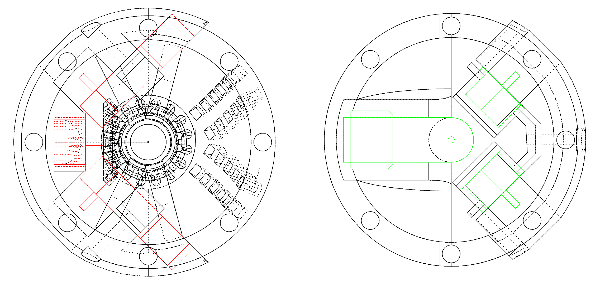
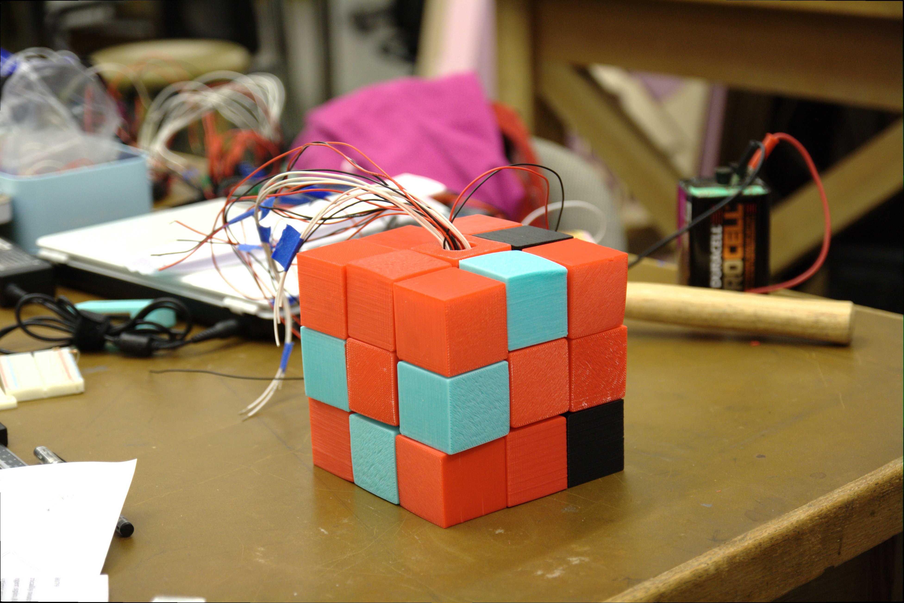
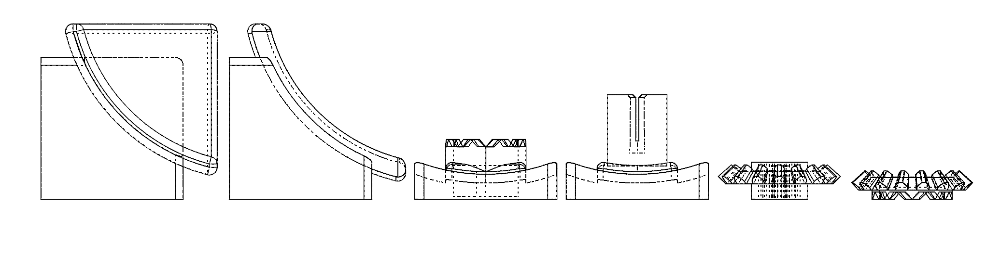

This is a Rubik's Cube that contains electric motors and sensors so that it can automatically solve itself. This project was created for MECH 423.
Disassembled core.
Assembled core.
Isometric view of core.
Front view of core.
Side view of core.
Top view of core.
Disassembled Cubies.
Assembled Cubies.
Side view of cubies.